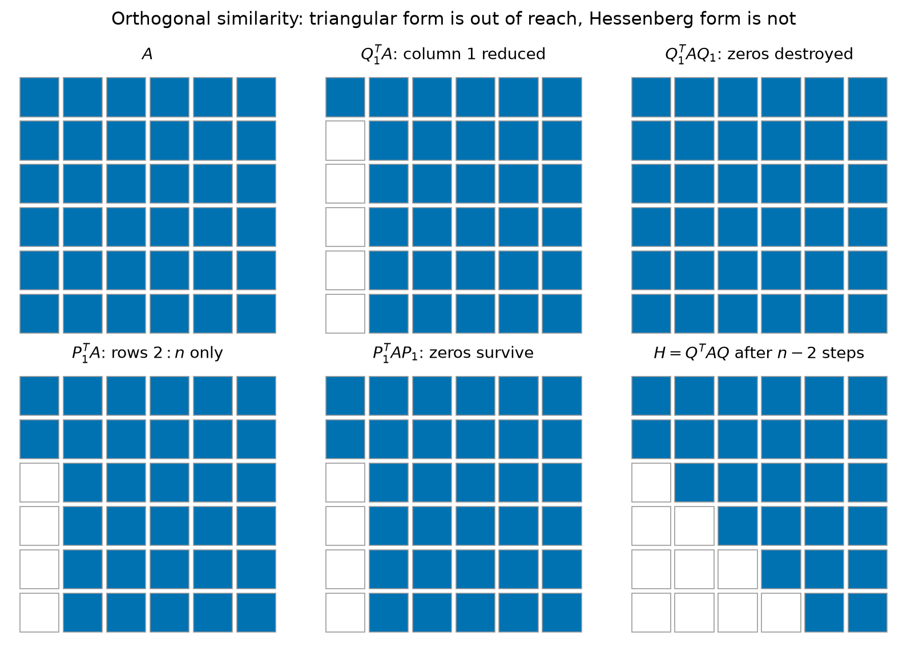
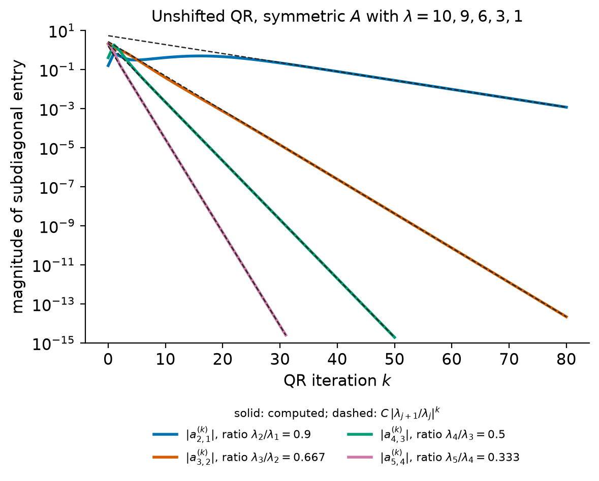
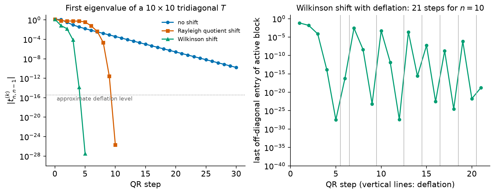
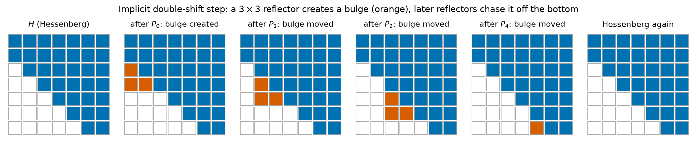

10. The QR algorithm#
Chapter 9 developed the theory of the eigenvalue problem and
the vector iterations (power, inverse and Rayleigh quotient iteration, and
simultaneous iteration) that compute one eigenvalue or a few. This chapter is
about the algorithm that computes all eigenvalues of a dense matrix, and
that sits behind numpy.linalg.eig, scipy.linalg.eigh, scipy.linalg.schur
and, in a modified form, numpy.linalg.svd: the QR algorithm of Francis and
Kublanovskaya. In its simplest form the algorithm is very short.
Factor \(A = QR\), multiply the factors in the other order, and repeat. Why this
converges, why it is fast, and why the version in a library looks so different
from the two-line description are the subjects of this chapter.
The practical algorithm is the result of four ideas, each of which removes an obstacle. A preliminary reduction to Hessenberg form (tridiagonal form for symmetric matrices) makes each QR step cost \(\bigO(n^2)\) instead of \(\bigO(n^3)\) flops. Shifts turn the linear convergence of the basic iteration into quadratic or cubic convergence. Deflation splits the problem as soon as an eigenvalue has converged. Implicit shifting, with Francis’s double-shift step, lets a real matrix with complex eigenvalues be handled entirely in real arithmetic. At the end of the chapter we turn to the singular value decomposition, which is computed by the same ideas applied to a bidiagonal matrix, and in the case study we use the symmetric QR algorithm to partition a social network.
Learning objectives
After working through this chapter you should be able to:
explain why every eigenvalue algorithm for general matrices must be iterative, and describe the two-phase strategy of a direct reduction followed by an iteration;
reduce a matrix to Hessenberg (or symmetric tridiagonal) form by Householder similarity transformations, count the flops, and state the backward stability result;
prove that the unshifted QR algorithm is simultaneous iteration in disguise, and derive its linear convergence rates;
show that QR steps preserve Hessenberg and tridiagonal form and cost \(\bigO(n^2)\) and \(\bigO(n)\) flops, respectively;
choose shifts (Rayleigh quotient, Wilkinson, Francis double shift), explain when they fail, and implement deflation;
state the implicit Q theorem and explain bulge chasing;
explain why the SVD is not computed from \(A^TA\), and describe Golub–Kahan bidiagonalization and the routines that LAPACK, NumPy and SciPy use.
10.1. Why eigenvalue algorithms are iterative#
Throughout the chapter \(A\in\R^{n\times n}\). The eigenvalues of \(A\) are the roots of its characteristic polynomial, and conversely every polynomial is a characteristic polynomial: the monic polynomial \(p(z) = z^n + c_{n-1}z^{n-1} + \dots + c_1z + c_0\) is, up to the sign \((-1)^n\), the characteristic polynomial of the companion matrix
An algorithm that computed the eigenvalues of every matrix exactly in finitely
many arithmetic operations and root extractions would therefore solve every
polynomial equation by radicals. By the Abel–Ruffini theorem this is
impossible for degree \(5\) and higher [Trefethen and Bau, 1997] (Lecture 25).
Every general eigenvalue algorithm must be iterative: it produces a sequence
that converges to the eigenvalues, and we stop when the error is at the level
of rounding errors. (Computing eigenvalues as roots of the characteristic
polynomial is, in addition, a numerically poor idea, because the roots of a
polynomial can be extremely sensitive to its coefficients; see
Chapter 9. In fact numpy.roots goes the other way: it
computes the eigenvalues of the companion matrix.)
The goal of the iteration is the Schur form of Chapter 9: \(A = QTQ^*\) with \(Q\) unitary and \(T\) upper triangular, or, for a real matrix in real arithmetic, the real Schur form introduced in Section 10.7. For symmetric \(A\) the Schur form is the spectral decomposition \(A = Q\Lambda Q^T\). All practical dense eigenvalue algorithms proceed in two phases:
A direct phase. A finite sequence of orthogonal similarity transformations reduces \(A\) to upper Hessenberg form \(H = Q_0^TAQ_0\), or to tridiagonal form if \(A\) is symmetric. This costs \(\bigO(n^3)\) flops and is done once.
An iterative phase. The shifted QR algorithm, applied to \(H\), produces a sequence of Hessenberg matrices that converges to (real) Schur form. Each step costs \(\bigO(n^2)\) flops, or \(\bigO(n)\) in the tridiagonal case.
Orthogonal similarity transformations are used throughout because they preserve eigenvalues, symmetry and the 2-norm, and because they can be applied in a backward stable way (Chapter 4).
10.2. Reduction to Hessenberg and tridiagonal form#
10.2.1. Why not triangular form directly?#
Since the target is triangular, why not use Householder reflectors to reduce \(A\) to triangular form by similarity, as Householder QR reduces it to triangular form by multiplication from the left? The first reflector \(Q_1\) of Householder QR introduces zeros in column 1 below the diagonal. But a similarity transformation must also be applied on the right, and \((Q_1^TA)Q_1\) recombines all columns of \(Q_1^TA\), including the first, so the zeros are destroyed (Figure 10.1, top row). This is not a defect of a particular reflector: by the argument of the previous section, no finite sequence of similarity transformations can produce a triangular matrix for general \(A\) (Exercise 10.1).
The remedy is to be less ambitious. A reflector \(P_1\) that acts only on rows \(2\) to \(n\) can zero the entries \(a_{31},\dots,a_{n1}\). Multiplying by \(P_1\) on the right changes only columns \(2\) to \(n\), so the new zeros in column 1 survive (Figure 10.1, bottom row). Repeating the process column by column produces a matrix that is zero below the first subdiagonal.


Figure 10.1 Nonzero patterns (blue) for a random \(6\times6\) matrix. Top: a reflector that zeros column 1 below the diagonal fills the column in again when it is applied on the right. Bottom: a reflector acting on rows \(2{:}n\) leaves column 1 untouched when applied on the right, and \(n-2\) such steps produce Hessenberg form.#
Definition 10.1 (Hessenberg and tridiagonal matrices)
A matrix \(H\in\R^{n\times n}\) is upper Hessenberg if \(h_{ij} = 0\) whenever \(i > j+1\). It is unreduced if in addition all subdiagonal entries \(h_{j+1,j}\), \(j = 1,\dots,n-1\), are nonzero. A matrix that is both upper and lower Hessenberg is tridiagonal; a symmetric upper Hessenberg matrix is tridiagonal.
10.2.2. Householder reduction#
Theorem 10.1 (Reduction to Hessenberg form)
For every \(A\in\R^{n\times n}\) there is an orthogonal \(Q\), a product of \(n-2\) Householder reflectors, such that \(H = Q^TAQ\) is upper Hessenberg. If \(A\) is symmetric, \(H\) is symmetric tridiagonal.
Proof. Set \(A^{[0]} = A\). For \(k = 1,\dots,n-2\), let \(x\in\R^{n-k}\) be the part of column \(k\) of \(A^{[k-1]}\) below the diagonal, that is, rows \(k+1\) to \(n\). By Theorem 1.1 there is a reflector \(\tilde P_k\) of order \(n-k\) with \(\tilde P_kx = \alpha e_1\) (take \(\tilde P_k = I\) if \(x\) is already a multiple of \(e_1\), in particular if \(x = 0\)). Let \(P_k = \diag(I_k, \tilde P_k)\) and \(A^{[k]} = P_kA^{[k-1]}P_k\); note that \(P_k = P_k^T = P_k^{-1}\). Multiplication by \(P_k\) on the left changes only rows \(k+1\) to \(n\) and creates zeros in positions \((k+2,k),\dots,(n,k)\). Multiplication on the right changes only columns \(k+1\) to \(n\), so it does not touch columns \(1\) to \(k\), and in particular preserves these zeros and all zeros created in earlier steps. After \(n-2\) steps, \(H = A^{[n-2]} = Q^TAQ\) with \(Q = P_1P_2\cdots P_{n-2}\) is upper Hessenberg. If \(A = A^T\), then \(H^T = Q^TA^TQ = H\), and a symmetric Hessenberg matrix is tridiagonal.
Algorithm 10.1 (Householder reduction to Hessenberg form)
Input: \(A\in\R^{n\times n}\).
Output: \(H = Q^TAQ\) upper Hessenberg, overwriting \(A\); the Householder vectors \(v_k\) and scalars \(\beta_k\) that define \(Q\).
For \(k = 1,\dots,n-2\):
\([v_k,\beta_k] \leftarrow\) Householder vector of \(A(k{+}1{:}n,\ k)\) (Algorithm 1.1).
\(A(k{+}1{:}n,\ k{:}n) \leftarrow A(k{+}1{:}n,\ k{:}n) - \beta_kv_k\big(v_k^TA(k{+}1{:}n,\ k{:}n)\big)\).
\(A(1{:}n,\ k{+}1{:}n) \leftarrow A(1{:}n,\ k{+}1{:}n) - \beta_k\big(A(1{:}n,\ k{+}1{:}n)v_k\big)v_k^T\).
Proposition 10.1 (Cost of the reduction)
Algorithm 10.1 costs \(\tfrac{10}{3}n^3\) flops to leading order. Forming \(Q\) explicitly from the stored reflectors costs another \(\tfrac43n^3\) flops. For symmetric \(A\), a variant that works only with the lower triangle and uses a symmetric rank-two update reduces \(A\) to tridiagonal form in \(\tfrac43n^3\) flops.
Proof. Applying \(I - \beta vv^T\) with \(v\in\R^m\) to an \(m\times p\) block costs about \(4mp\) flops (\(2mp\) for \(w^T = v^TX\) and \(2mp\) for the rank-one update). In step \(k\) let \(m = n-k\). The left update acts on an \(m\times(m+1)\) block, about \(4m^2\) flops; the right update acts on an \(n\times m\) block, \(4nm\) flops. Summing over \(m = 2,\dots,n-1\),
Accumulating \(Q = P_1\cdots P_{n-2}\) backward, starting from \(I\) and applying \(P_{n-2}\) first, involves blocks of size \(m\times m\) only, hence \(\sum 4m^2\approx\tfrac43n^3\) flops. For symmetric \(A\), write the step on the trailing block \(A_{22}\in\R^{m\times m}\) as
which is verified by expanding the left-hand side. Computing \(p\) costs \(2m^2\) flops and the symmetric rank-two update of one triangle another \(2m^2\), so the total is \(\sum 4m^2\approx\tfrac43n^3\) (Exercise 10.2).
For comparison, Householder QR of a square matrix costs \(\tfrac43n^3\) flops (Chapter 7). Hessenberg reduction costs more because every reflector is applied on both sides.
Theorem 10.2 (Backward stability of the reduction)
Let \(\widehat H\) be the Hessenberg matrix computed by Algorithm 10.1 in floating-point arithmetic, and let \(\tilde Q\) be the exactly orthogonal matrix defined by the computed Householder vectors. Then
where the constant in \(\bigO(u)\) grows modestly with \(n\) [Trefethen and Bau, 1997] (Lecture 26), [Golub and Van Loan, 2013] (Section 7.4).
Trefethen and Bau write \(\epsilon_{\text{machine}}\) for what we call \(u\). The theorem is the reason the eigenvalues of \(\widehat H\) may be used in place of those of \(A\): they are the exact eigenvalues of the nearby matrix \(A + \delta A\). How far they are from the eigenvalues of \(A\) is then a question of conditioning, answered by the perturbation theory of Chapter 9. For a symmetric matrix, Weyl’s theorem gives \(|\hat\lambda_i - \lambda_i|\le\|\delta A\|_2\), so every eigenvalue is computed with an absolute error of order \(u\|A\|_2\). For a nonsymmetric matrix the error in an eigenvalue can be larger by the factor of its condition number.
Warning
It is often said that “orthogonal transformations never amplify errors.” The precise statement is the backward stability result above: the computed result is the exact result for a slightly perturbed matrix. Whether the eigenvalues are then accurate depends on their conditioning. A defective or highly nonnormal matrix can have eigenvalues that change by much more than \(\|\delta A\|\) under a perturbation \(\delta A\), and no orthogonal algorithm can prevent this.
Example 10.1 (Tridiagonalizing a \(3\times3\) symmetric matrix)
Let
Only one reflector is needed. The part of column 1 below the diagonal is \(x = (3,4)^T\) with \(\|x\|_2 = 5\). Algorithm 1.1 gives \(\alpha = -5\), \(v = (8,4)^T\), normalized to \(v = (1,\tfrac12)^T\), and \(\beta = 2/(v^Tv) = \tfrac85\), so
The trailing block becomes
As checks, \(\trace T = 6 = \trace A\) and \(\|T\|_F^2 = 66 = \|A\|_F^2\), as they must be for an orthogonal similarity. The lab reproduces \(T\) with its own implementation and with SciPy.
In LAPACK the reduction is performed by dgehrd (general matrices) and
dsytrd (symmetric matrices), in blocked form so that most flops are spent in
matrix-matrix products; dorghr and dorgtr form \(Q\) [Anderson et al., 1999].
The function scipy.linalg.hessenberg calls dgehrd and, if asked for \(Q\),
dorghr. It is a Householder reduction; it does not use the Lanczos process
(which is a Krylov method for large sparse matrices,
Chapter 11), and it does not exploit symmetry: given a
symmetric matrix it returns a matrix that is tridiagonal up to rounding errors,
at the cost of the general reduction. dsytrd is available as
scipy.linalg.lapack.dsytrd. In the lab the two are timed; the flop counts
predict a ratio of \(\tfrac{10}{3}/\tfrac43 = 2.5\), and whether a measurement on
a particular machine comes close to it depends on the matrix size and on how
well each routine uses the memory hierarchy.
Check your understanding
Why does the reduction stop at Hessenberg form after \(n-2\) steps, rather than continuing with a reflector for column \(n-1\)?
Answer. In column \(n-1\) the only entry below the subdiagonal position would be in row \(n+1\), which does not exist: the part of column \(n-1\) below the diagonal has length one, and a reflector of order one cannot introduce a zero. Column \(n\) has no subdiagonal entries at all.
10.3. The QR algorithm without shifts#
Definition 10.2 (The unshifted QR algorithm)
Let \(A^{(0)} = A\). For \(k = 1,2,\dots\) compute a QR factorization and multiply the factors in reverse order:
We also write \(\underline Q^{(k)} = Q^{(1)}Q^{(2)}\cdots Q^{(k)}\) and \(\underline R^{(k)} = R^{(k)}R^{(k-1)}\cdots R^{(1)}\), with \(\underline Q^{(0)} = \underline R^{(0)} = I\).
Since \(R^{(k)} = Q^{(k)T}A^{(k-1)}\), each step is an orthogonal similarity, \(A^{(k)} = Q^{(k)T}A^{(k-1)}Q^{(k)}\), and all iterates have the eigenvalues of \(A\). Nothing about the formula suggests that the iterates should become triangular. The explanation is that the QR algorithm is a disguised form of simultaneous iteration (Chapter 9). Recall that simultaneous iteration started from \(\underline Q^{(0)} = I\) computes
so that the columns of \(\underline Q^{(k)}\) are orthonormal bases for the nested subspaces \(A^k\Span\{e_1,\dots,e_j\}\), \(j = 1,\dots,n\).
Theorem 10.3 (The QR algorithm computes powers of \(A\))
The matrices of Definition 10.2 satisfy, for all \(k\ge0\),
Consequently, if \(A\) is nonsingular and all QR factorizations are normalized so that the triangular factors have positive diagonal entries, then \(\underline Q^{(k)}\) is exactly the matrix produced by simultaneous iteration (10.3), and the two algorithms generate the same matrices \(R^{(k)}\) and \(A^{(k)}\) [Trefethen and Bau, 1997] (Lecture 28), [Watkins, 1982].
Proof. For \(k = 0\) both identities read \(I = I\cdot I\) and \(A = A\). Assume both hold for \(k-1\). By the second identity for \(k-1\), \(A\underline Q^{(k-1)} = \underline Q^{(k-1)}A^{(k-1)}\). Therefore
and \(A^{(k)} = Q^{(k)T}A^{(k-1)}Q^{(k)} = Q^{(k)T}\underline Q^{(k-1)T}A\underline Q^{(k-1)}Q^{(k)} = \underline Q^{(k)T}A\underline Q^{(k)}\).
For the equivalence, note that the same computation shows \(A\underline Q^{(k-1)} = \underline Q^{(k-1)}Q^{(k)}R^{(k)} = \underline Q^{(k)}R^{(k)}\), which is a QR factorization of \(A\underline Q^{(k-1)}\). If \(A\) is nonsingular, so is \(A\underline Q^{(k-1)}\), and its QR factorization with positive diagonal in \(R\) is unique. By induction the matrices \(\underline Q^{(k)}\) and \(R^{(k)}\) of the two algorithms coincide.
The identity \(A^k = \underline Q^{(k)}\underline R^{(k)}\) has two useful readings. Since \(\underline R^{(k)}\) is upper triangular, the first column of \(A^k\) is a multiple of the first column of \(\underline Q^{(k)}\): the first column of the accumulated \(Q\) is the power iteration applied to \(e_1\). Taking inverses and transposes, \(A^{-k} = \underline R^{(k)-1}\underline Q^{(k)T}\) gives \((A^{-T})^k = \underline Q^{(k)}\big(\underline R^{(k)}\big)^{-T}\), and \(\big(\underline R^{(k)}\big)^{-T}\) is lower triangular. So the last column of \(\underline Q^{(k)}\) is a multiple of \((A^{-T})^ke_n\): it is inverse iteration with \(A^T\) (with \(A\) itself if \(A\) is symmetric) applied to \(e_n\). This second reading is what makes shifts so effective (Section 10.5).
10.3.1. Convergence#
Theorem 10.4 (Convergence of the unshifted QR algorithm)
Let \(A\in\R^{n\times n}\) be symmetric with eigenvalues \(|\lambda_1|>|\lambda_2|>\dots>|\lambda_n|\) and orthonormal eigenvectors \(q_1,\dots,q_n\), and assume that all leading principal submatrices of \([q_1,\dots,q_n]^T\) are nonsingular. Then, as \(k\to\infty\), \(A^{(k)}\) converges to \(\diag(\lambda_1,\dots,\lambda_n)\). More precisely, the off-diagonal entries satisfy \(|a_{ij}^{(k)}| = \bigO(|\lambda_i/\lambda_j|^k)\) for \(i>j\), and the diagonal entries satisfy \(|a_{jj}^{(k)} - \lambda_j| = \bigO(\rho^{2k})\) with \(\rho = \max_j|\lambda_{j+1}/\lambda_j|\). See Trefethen and Bau [1997] (Lecture 28) for the linear convergence; the squared rate for the diagonal follows because the diagonal entries are Rayleigh quotients.
Proof. (Sketch) By Theorem 10.3 the first \(j\) columns of \(\underline Q^{(k)}\) span \(A^k\Span\{e_1,\dots,e_j\}\). The hypothesis on \([q_1,\dots,q_n]^T\) says that \(\Span\{e_1,\dots,e_j\}\) is not deficient in the directions \(q_1,\dots,q_j\), and the analysis of simultaneous iteration in Chapter 9 then shows that this subspace approaches \(\Span\{q_1,\dots,q_j\}\) with an error of order \(|\lambda_{j+1}/\lambda_j|^k\). If \(\underline Q^{(k)} = [U_1, U_2]\) with \(U_1\) spanning an approximately invariant subspace, then the block \(U_2^TAU_1\) of \(A^{(k)} = \underline Q^{(k)T}A\underline Q^{(k)}\) is small in proportion to the angle between \(\range(U_1)\) and the invariant subspace. The diagonal entries are Rayleigh quotients \(a_{jj}^{(k)} = \underline q_j^TA\underline q_j\), whose error is quadratic in the error of the vector (Chapter 9).
For nonsymmetric matrices with eigenvalues of distinct moduli the same argument shows that \(A^{(k)}\) converges to an upper triangular Schur form, with subdiagonal entries decaying like \(|\lambda_{j+1}/\lambda_j|^k\), under an analogous genericity assumption [Golub and Van Loan, 2013] (Section 7.3), [Wilkinson, 1965] (Chapter 8). The entries above the diagonal do not converge in general, only the part below it.
Example 10.2 (Two steps by hand)
Let \(A = \begin{bmatrix}2&1\\1&2\end{bmatrix}\), with eigenvalues \(3\) and \(1\). The QR factorization of \(A\) is
The off-diagonal entry has dropped from \(1\) to \(0.6\), and \(a_{11}\) has moved from \(2\) to \(2.8\), toward \(\lambda_1 = 3\). In Exercise 10.4 you show that \(|a_{21}^{(k)}| = 2\cdot3^k/(9^k+1)\) and \(a_{11}^{(k)} = 3 - 2/(9^k+1)\). For \(k = 2\) this gives \(|a_{21}^{(2)}| = 18/82\approx0.2195\). The off-diagonal entry decreases by the factor \(\lambda_2/\lambda_1 = \tfrac13\) per step asymptotically, and the diagonal entry converges at the squared rate \(\tfrac19\), as Theorem 10.4 predicts.
Figure 10.2 shows the experiment of the lab for a symmetric \(5\times5\) matrix with eigenvalues \(10, 9, 6, 3, 1\). Each subdiagonal entry decays at its own rate \(\lambda_{j+1}/\lambda_j\), from \(0.9\) for the first to \(\tfrac13\) for the last. The entry \(a_{21}^{(k)}\) first grows: the theorem is asymptotic, and the constant in the \(\bigO\) depends on how the starting subspace is aligned with the eigenvectors.


Figure 10.2 Unshifted QR iteration for a symmetric matrix with eigenvalues \(10, 9, 6, 3, 1\). The subdiagonal entries decay linearly at the rates \(|\lambda_{j+1}/\lambda_j|\) (dashed reference lines).#
The unshifted algorithm has three serious limitations. First, the convergence is linear with rates that can be arbitrarily close to \(1\). Second, it does not converge at all when two eigenvalues have the same modulus. The matrix \(A = \begin{bmatrix}0&1\\1&0\end{bmatrix}\), with eigenvalues \(\pm1\), is orthogonal; its QR factorization is \(A = A\cdot I\), and \(A^{(1)} = IA = A\). A real matrix with a pair of complex conjugate eigenvalues always has two eigenvalues of equal modulus, and in real arithmetic the iterates can at best converge to a block triangular form with \(2\times2\) blocks. Third, each step costs \(\bigO(n^3)\) flops for the QR factorization and the product \(RQ\), far too much for an iteration that may need many steps. The rest of the chapter removes these limitations one at a time, starting with the cost.
10.4. QR steps on Hessenberg matrices#
Theorem 10.5 (QR steps preserve Hessenberg form)
Let \(H\in\R^{n\times n}\) be upper Hessenberg and \(\mu\in\R\). Compute the QR factorization \(H - \mu I = QR\) with Givens rotations, \(G_{n-1}\cdots G_2G_1(H - \mu I) = R\) and \(Q = G_1^TG_2^T\cdots G_{n-1}^T\), where \(G_j\) acts on rows \(j\) and \(j+1\). Then \(Q\) and \(H' = RQ + \mu I\) are upper Hessenberg. If \(H\) is symmetric, \(H'\) is symmetric tridiagonal. If \(H - \mu I\) is nonsingular, the same conclusions hold for every QR factorization of \(H - \mu I\).
Proof. Since \(H - \mu I\) has only one nonzero entry below the diagonal in each column, the rotation \(G_j\) in rows \(j, j+1\) can zero the entry \((j+1,j)\) (Givens rotations are defined in Chapter 1), and \(n-1\) rotations produce the upper triangular \(R\). Now form \(RQ = RG_1^TG_2^T\cdots G_{n-1}^T\) from left to right. Multiplication on the right by \(G_j^T\) replaces columns \(j\) and \(j+1\) by linear combinations of themselves. We claim that before this multiplication, column \(j\) has nonzeros only in rows \(1,\dots,j\) and column \(j+1\) only in rows \(1,\dots,j+1\). For \(j = 1\) this holds because \(R\) is upper triangular; the multiplication by \(G_j^T\) then fills in the single position \((j+1,j)\) and leaves column \(j+1\) with nonzeros in rows \(1,\dots,j+1\), which, together with the untouched column \(j+2\), is the claim for \(j+1\). So \(RQ\) is upper triangular plus a subdiagonal, that is, upper Hessenberg, and so is \(RQ + \mu I\). Applying the same argument to \(I\cdot G_1^T\cdots G_{n-1}^T\) shows that \(Q\) is upper Hessenberg. If \(H\) is symmetric, \(H' = Q^THQ\) is symmetric and Hessenberg, hence tridiagonal.
If \(H - \mu I\) is nonsingular, any QR factorization has nonsingular \(R\), and \(Q = (H - \mu I)R^{-1}\) is the product of a Hessenberg and an upper triangular matrix, hence Hessenberg; then \(RQ\), a product of an upper triangular and a Hessenberg matrix, is Hessenberg (Exercise 10.3).
Algorithm 10.2 (One shifted QR step on a Hessenberg matrix)
Input: \(H\in\R^{n\times n}\) upper Hessenberg, a shift \(\mu\in\R\).
Output: \(H \leftarrow RQ + \mu I\) where \(H - \mu I = QR\).
\(H\leftarrow H - \mu I\).
For \(j = 1,\dots,n-1\):
Compute \(c_j, s_j\) with \(\begin{bmatrix}c_j&s_j\\-s_j&c_j\end{bmatrix}\begin{bmatrix}h_{jj}\\h_{j+1,j}\end{bmatrix} = \begin{bmatrix}r\\0\end{bmatrix}\).
Apply this rotation to rows \(j, j+1\) of \(H\), columns \(j\) to \(n\).
For \(j = 1,\dots,n-1\):
Apply the transpose of rotation \(j\) to columns \(j, j+1\) of \(H\), rows \(1\) to \(j+1\).
\(H\leftarrow H + \mu I\).
A rotation applied to two rows or columns of length \(\ell\) costs \(6\ell\) flops. Step 2 applies rotations to rows of length \(n-j+1\), and step 3 to columns of length \(j+1\), so a QR step on a Hessenberg matrix costs about \(3n^2 + 3n^2 = 6n^2\) flops, compared with \(\bigO(n^3)\) for a full matrix. For a symmetric tridiagonal matrix each rotation touches only a bounded number of nonzero entries, and a step costs \(\bigO(n)\) flops. If the orthogonal transformations are accumulated in order to compute eigenvectors, each rotation must also be applied to two columns of an \(n\times n\) matrix, which adds \(6n\) flops per rotation, about \(6n^2\) per step, in both cases. In practice the step is performed in the implicit form of Section 10.6, which has the same cost.
10.5. Shifts and deflation#
10.5.1. The shifted QR algorithm#
Inverse iteration (Chapter 9) converges fast when its shift is close to an eigenvalue. The last column of \(\underline Q^{(k)}\) performs inverse iteration, so we introduce shifts into the QR algorithm:
Again \(A^{(k)} = Q^{(k)T}A^{(k-1)}Q^{(k)}\), and the proof of Theorem 10.3 generalizes directly (Exercise 10.5) to
Taking inverse transposes as before, the last column of \(\underline Q^{(k)}\) is the result of \(k\) steps of inverse iteration with \(A^T\) and shifts \(\mu^{(1)},\dots,\mu^{(k)}\), applied to \(e_n\). Because \(A^{(k)} = \underline Q^{(k)T}A\underline Q^{(k)}\), the last row of \(A^{(k)}\) is \(\underline q_n^TA\underline Q^{(k)}\), where \(\underline q_n\) is the last column of \(\underline Q^{(k)}\). If \(\underline q_n\) is close to a left eigenvector, \(\underline q_n^TA\approx\lambda\underline q_n^T\), this row is close to \(\lambda e_n^T\): the entries \(a_{n,1}^{(k)},\dots,a_{n,n-1}^{(k)}\) are small and \(a_{nn}^{(k)}\approx\lambda\). For a Hessenberg matrix the only nonzero among them is \(a_{n,n-1}^{(k)}\), which is the entry we watch.
10.5.2. Deflation#
When a subdiagonal entry of a Hessenberg matrix is zero, the matrix is block upper triangular,
and the eigenvalues of \(H\) are those of \(H_{11}\) and \(H_{22}\), which can be computed separately. This is deflation. In floating-point arithmetic an entry is never exactly zero, and we set it to zero when it is negligible. The standard criterion is
Proposition 10.2 (Deflation is a small backward error)
Setting to zero an entry \(h_{j+1,j}\) that satisfies (10.7) replaces \(H\) by \(H + E\) with \(\|E\|_2 = |h_{j+1,j}|\le2u\|H\|_2\). If \(H\) is symmetric tridiagonal (and the entry \(h_{j,j+1}\) is set to zero as well), then \(\|E\|_2 = |h_{j+1,j}|\) and every eigenvalue changes by at most \(2u\|H\|_2\).
Proof. \(E\) has the single nonzero entry \(-h_{j+1,j}\) (two symmetric entries in the symmetric case), and a matrix whose only nonzero entries are \(\pm\epsilon\) in positions \((j+1,j)\) and possibly \((j,j+1)\) has 2-norm \(|\epsilon|\). Since \(|h_{jj}| = |e_j^THe_j|\le\|H\|_2\), the criterion gives \(|h_{j+1,j}|\le2u\|H\|_2\). The eigenvalue statement is Weyl’s theorem (Chapter 9).
For a nonsymmetric matrix the backward error is equally small, but the effect on the eigenvalues depends on their condition numbers (Exercise 10.8). In a program, deflation is combined with the iteration as follows: after each step, all negligible subdiagonal entries are set to zero; the iteration then works on the largest unreduced diagonal block at the bottom of the matrix that is not yet triangular (the active block), with a shift computed from that block. Deflation is what turns fast convergence of one entry into a fast algorithm for all eigenvalues: once \(h_{n,n-1}\) is negligible, the next shift is chosen to find an eigenvalue of the leading \((n-1)\times(n-1)\) block, and so on.
10.5.3. The Rayleigh quotient shift and its failure#
The natural shift is the Rayleigh quotient of the last column, \(\mu^{(k)} = a_{nn}^{(k-1)} = \underline q_n^TA\underline q_n\). For symmetric matrices, the last column of \(\underline Q^{(k)}\) then performs Rayleigh quotient iteration, and when it converges the convergence is cubic [Trefethen and Bau, 1997] (Lecture 29). But it does not always converge.
Example 10.3 (The Rayleigh quotient shift can stagnate)
For \(A = \begin{bmatrix}0&1\\1&0\end{bmatrix}\) the Rayleigh quotient shift is \(a_{22} = 0\), so the shifted step is the unshifted step, and we saw that \(A^{(1)} = A\). The shift lies exactly halfway between the eigenvalues \(-1\) and \(+1\), and inverse iteration with this shift cannot prefer either eigenvector. More generally, for a symmetric \(2\times2\) matrix \(\begin{bmatrix}a&b\\b&c\end{bmatrix}\) one step with shift \(c\) produces the off-diagonal entry \(-b^3/\big((a-c)^2 + b^2\big)\) (Exercise 10.6): cubic convergence when \(|a - c|\) is not small compared with \(|b|\), and no progress at all when \(a = c\).
10.5.4. The Wilkinson shift#
Definition 10.3 (Wilkinson shift)
Let the trailing \(2\times2\) block of the active symmetric tridiagonal matrix be \(\begin{bmatrix}a&b\\b&c\end{bmatrix}\). The Wilkinson shift is the eigenvalue of this block that is closer to \(c\) (either one in case of a tie). With \(\delta = (a - c)/2\) and \(\sign(0) = 1\), it is
The eigenvalues of the block are \(c + \delta\pm\sqrt{\delta^2+b^2}\), and the one closer to \(c\) is \(c + \delta - \sign(\delta)\sqrt{\delta^2 + b^2}\). Formula (10.8) is the same number, rewritten to avoid the cancellation in \(|\delta| - \sqrt{\delta^2 + b^2}\) when \(|b|\ll|\delta|\) (Exercise 10.7). For \(A = \begin{bmatrix}0&1\\1&0\end{bmatrix}\) we have \(\delta = 0\) and \(\mu = -1\), an eigenvalue, and one step deflates exactly.
Theorem 10.6 (Convergence with the Wilkinson shift)
Let \(T\) be a real symmetric unreduced tridiagonal matrix. In exact arithmetic, the QR algorithm with the Wilkinson shift applied to \(T\) always converges: the last off-diagonal entry tends to zero [Wilkinson, 1968]. The asymptotic rate of convergence is at least quadratic, and it is cubic in the generic case [Parlett, 1998] (Chapter 8), [Trefethen and Bau, 1997] (Lecture 29).
Warning
The Wilkinson shift does not guarantee cubic convergence. What it guarantees, for symmetric tridiagonal matrices, is global convergence; the rate is at least quadratic, and cubic except in special cases. The Rayleigh quotient shift gives cubic convergence when it converges, but it can fail to converge. Both statements concern exact arithmetic and the symmetric case. For nonsymmetric matrices no shift strategy is known to converge for every matrix.
Algorithm 10.3 (Symmetric tridiagonal QR with Wilkinson shift and deflation)
Input: symmetric tridiagonal \(T\in\R^{n\times n}\).
Output: the eigenvalues of \(T\), on the diagonal of \(T\).
Set \(q\leftarrow n\) (the last row of the part that is not yet diagonal).
While \(q>1\):
For \(j = 1,\dots,q-1\): if \(|t_{j+1,j}|\le u(|t_{jj}| + |t_{j+1,j+1}|)\), set \(t_{j+1,j} = t_{j,j+1} = 0\).
If \(t_{q,q-1} = 0\), set \(q\leftarrow q-1\) and continue with the next pass of the loop.
Let \(p\) be the smallest index such that \(t_{j+1,j}\ne0\) for \(j = p,\dots,q-1\) (the active block is \(T(p{:}q,\ p{:}q)\)).
Compute the Wilkinson shift \(\mu\) from \(T(q{-}1{:}q,\ q{-}1{:}q)\).
Perform one QR step with shift \(\mu\) on \(T(p{:}q,\ p{:}q)\).
Figure 10.3 compares the three strategies on a \(10\times10\) symmetric tridiagonal matrix obtained from a random symmetric matrix (seed 7 in the figure script). Without shifts, \(|t_{n,n-1}|\) decreases asymptotically by the factor \(0.48\) per step, the ratio of the smallest to the second smallest eigenvalue modulus. The Rayleigh quotient shift reduces the entry only from \(1.3\) to \(0.37\) in its first five steps and then converges very fast, reaching the deflation level after \(10\) steps. The Wilkinson shift deflates after \(5\) steps; in its fourth step the entry drops from \(7.4\times10^{-5}\) to \(1.4\times10^{-14}\). The right panel shows the whole computation with deflation: all ten eigenvalues are found in \(21\) QR steps. The steps spent on earlier eigenvalues have also reduced the other off-diagonal entries, so that the later eigenvalues need fewer steps.


Figure 10.3 Left: \(|t_{n,n-1}^{(k)}|\) for a \(10\times10\) symmetric tridiagonal matrix under three shift strategies, until it falls below the deflation level (10.7). Right: a complete run of Algorithm 10.3; vertical lines mark deflations.#
How many steps are needed in general? For the random symmetric matrices of the
lab (orders \(25\) to \(200\), seed 10), our implementation of
Algorithm 10.3 needed between \(2.0\) and \(2.2\) QR steps per
eigenvalue, and the computed eigenvalues agreed with numpy.linalg.eigvalsh
to within \(60u\|A\|_2\). These are observations for one implementation, one
deflation criterion and one family of test matrices, not theorems. Deflation
is essential for such counts: without it, every step works on the whole matrix
and the shift keeps being computed from a trailing block whose eigenvalue has
already converged.
Check your understanding
The deflation criterion (10.7) compares \(|t_{j+1,j}|\) with \(u(|t_{jj}| + |t_{j+1,j+1}|)\) rather than with \(u\|T\|_2\). What is the advantage, and why is the resulting backward error still bounded by \(2u\|T\|_2\)?
Answer. The local criterion is stricter when the neighboring diagonal entries are small, which protects small eigenvalues of graded matrices, and it costs nothing to evaluate. Since \(|t_{jj}|\le\|T\|_2\) for every \(j\), the local threshold never exceeds \(2u\|T\|_2\), so Proposition 10.2 still applies.
10.6. Implicit shifts and the implicit Q theorem#
The explicit shifted step subtracts \(\mu\) from the diagonal, factors, multiplies and adds \(\mu\) back. There is another way to perform the same step, based on the observation that a Hessenberg reduction is essentially determined by the first column of the transformation.
Theorem 10.7 (Implicit Q theorem)
Let \(A\in\R^{n\times n}\), and let \(Q = [q_1,\dots,q_n]\) and \(V = [v_1,\dots,v_n]\) be orthogonal matrices such that \(H = Q^TAQ\) and \(G = V^TAV\) are both upper Hessenberg and \(q_1 = v_1\). If \(H\) is unreduced, then \(v_j = \pm q_j\) and \(|g_{j,j-1}| = |h_{j,j-1}|\) for \(j = 2,\dots,n\); that is, \(G = D^THD\) with \(D = \diag(\pm1)\) [Golub and Van Loan, 2013] (Section 7.4).
Proof. Let \(W = V^TQ\), an orthogonal matrix with \(We_1 = V^Tq_1 = V^Tv_1 = e_1\). From \(AQ = QH\) and \(AV = VG\) we get \(GW = V^TAVV^TQ = V^TAQ = V^TQH = WH\). Compare column \(j\) of \(GW = WH\), with \(w_j = We_j\):
Suppose \(w_1,\dots,w_j\in\Span\{e_1,\dots,e_j\}\); this holds for \(j=1\). Since \(G\) is upper Hessenberg, \(Gw_j\in\Span\{e_1,\dots,e_{j+1}\}\), and because \(h_{j+1,j}\ne0\), \(w_{j+1}\in\Span\{e_1,\dots,e_{j+1}\}\). By induction \(W\) is upper triangular. An orthogonal upper triangular matrix is diagonal with entries \(\pm1\) (its first column is \(\pm e_1\), and orthogonality to it forces the rest of the first row to vanish; repeat). Then \(Q = VW\) gives \(q_j = \pm v_j\), and \(H = W^TGW\) gives \(h_{j,j-1} = \pm g_{j,j-1}\).
10.6.1. The implicitly shifted step#
Let \(H\) be unreduced upper Hessenberg and consider the explicit step \(H - \mu I = QR\), \(H' = RQ + \mu I = Q^THQ\). The first column of \(Q\) is determined by the first column of \(H - \mu I\): since \(R\) is upper triangular, \((H - \mu I)e_1 = r_{11}q_1\), so \(q_1\) is the unit vector in the direction of \((h_{11} - \mu,\ h_{21},\ 0,\dots,0)^T\). The implicit step proceeds as follows.
Choose a Givens rotation \(G_1\) in the \((1,2)\) plane whose first column is \(q_1\), and form \(G_1^THG_1\). This matrix is Hessenberg except for one nonzero entry in position \((3,1)\), the bulge.
Choose a rotation \(G_2\) in the \((2,3)\) plane such that \(G_2^T\) zeros the bulge in position \((3,1)\). The similarity \(G_2^T(\cdot)G_2\) creates a new bulge in position \((4,2)\).
Continue: \(G_j\) in the \((j,j+1)\) plane removes the bulge in position \((j+1,j-1)\) and creates one in position \((j+2,j)\). After \(G_{n-1}\) the bulge has been chased off the bottom of the matrix.
The result \(\tilde H = \tilde Q^TH\tilde Q\) with \(\tilde Q = G_1G_2\cdots G_{n-1}\) is upper Hessenberg, and since \(G_2,\dots,G_{n-1}\) do not act on the first coordinate, \(\tilde Qe_1 = G_1e_1 = q_1\). By Theorem 10.7, \(\tilde H\) agrees with the explicitly computed \(H'\) up to the signs of rows and columns (as long as \(H'\) is unreduced; if a subdiagonal entry of \(H'\) is zero, the two agree up to that point, which is exactly where deflation takes over). The shift enters only through the first rotation; \(\mu\) is never subtracted from the diagonal. Algorithm 10.3 is implemented in the lab in this form. The real payoff of the implicit formulation comes in the next section, where it allows two shifts, possibly complex, to be applied in real arithmetic.
10.7. Real nonsymmetric matrices: the Francis double-shift step#
A real matrix may have complex eigenvalues, which come in conjugate pairs. In
real arithmetic the best one can hope for is the real Schur form
[Golub and Van Loan, 2013] (Section 7.4): every \(A\in\R^{n\times n}\) can be written as
\(A = QTQ^T\) with \(Q\) real orthogonal and \(T\) real and block upper triangular
with diagonal blocks of order \(1\) (real eigenvalues) and \(2\) (complex conjugate
pairs). The eigenvalues of each \(2\times2\) block form one conjugate pair. The
function scipy.linalg.schur(A) returns this form, computed by LAPACK’s
dgees, and the lab shows its \(2\times2\) blocks.
Proposition 10.3 (A single real shift cannot find a complex eigenvalue)
Let \(A\) be real and upper Hessenberg, and let every shift \(\mu^{(k)}\) be real. Then all iterates \(A^{(k)}\) of (10.5) are real. If \(a_{n,n-1}^{(k)}\to0\), then every limit point of \(a_{nn}^{(k)}\) is a real eigenvalue of \(A\); a nonreal eigenvalue can never be isolated in the bottom \(1\times1\) position. Moreover, a real shift \(\mu\) is equally far from \(\lambda\) and \(\bar\lambda\), so the shifted inverse iteration performed by the last column cannot prefer one of them over the other.
Proof. The QR factorization of a real matrix is real, so by induction all \(Q^{(k)}\), \(R^{(k)}\) and \(A^{(k)}\) are real, and they are Hessenberg by Theorem 10.5. If \(a_{n,n-1}^{(k)}\to0\), the last row of \(A^{(k)}\) approaches \(a_{nn}^{(k)}e_n^T\), so \(a_{nn}^{(k)}\) is an exact eigenvalue of a matrix at distance \(|a_{n,n-1}^{(k)}|\) from \(A^{(k)}\), and its distance to the spectrum of \(A\) tends to zero. Its limit points are therefore eigenvalues of \(A\), and they are real as limits of real numbers. The last statement is \(|\lambda - \mu| = |\overline{\lambda - \mu}| = |\bar\lambda - \mu|\) for real \(\mu\).
A complex shift would work, but it would force complex arithmetic, and the resulting Schur form would be complex. Francis’s solution [Francis, 1961], [Francis, 1962] is to perform two steps at once, with the two eigenvalues \(\mu_1,\mu_2\) of the trailing \(2\times2\) block of the active matrix as shifts. These are either both real or a conjugate pair, so \(s = \mu_1 + \mu_2\) and \(t = \mu_1\mu_2\) (the trace and determinant of the block) are real.
Proposition 10.4 (The double-shift step is real)
Let \(H\) be real and let \(\mu_1,\mu_2\) be real or a complex conjugate pair, neither an eigenvalue of \(H\). Perform two shifted QR steps, possibly in complex arithmetic: \(H - \mu_1I = Q_1R_1\), \(H_1 = R_1Q_1 + \mu_1I\), \(H_1 - \mu_2I = Q_2R_2\), \(H_2 = R_2Q_2 + \mu_2I\). Then
which is real. If \(M = ZR\) is the real QR factorization of \(M\), then \(Q_1Q_2 = ZD\) for a diagonal \(D\) with \(|d_{jj}| = 1\), and \(H_2 = D^*(Z^THZ)D\) is, up to this diagonal similarity, the real matrix \(Z^THZ\).
Proof. Using \(H_1 - \mu_2I = R_1Q_1 + (\mu_1 - \mu_2)I\) and \(Q_1R_1 = H - \mu_1I\),
which is (10.9). The matrix \(M\) is real because \(s\) and \(t\) are, and nonsingular because neither shift is an eigenvalue. A nonsingular matrix has a QR factorization that is unique up to a unitary diagonal factor, which gives \(Q_1Q_2 = ZD\). Finally \(H_2 = (Q_1Q_2)^*H(Q_1Q_2) = D^*Z^THZD\).
Forming \(M\) explicitly would cost \(\bigO(n^3)\) flops. The implicit Q theorem avoids it: all we need is the first column of \(M\), which for Hessenberg \(H\) has only three nonzero entries,
(Exercise 10.9). A Householder reflector \(P_0\) of order \(3\) that maps these three entries to a multiple of \(e_1\) is applied as a similarity. It creates a bulge of three entries below the subdiagonal, and further reflectors of order \(3\) chase the bulge down and off the matrix (Figure 10.4). By the implicit Q theorem the result is, up to signs, the real matrix \(Z^THZ\) of Proposition 10.4. Each reflector touches three rows and three columns, so the step costs \(\bigO(n^2)\) flops, like a single-shift step.


Figure 10.4 One implicit double-shift step on a \(7\times7\) Hessenberg matrix, computed with the reflectors of Algorithm 10.4. Entries below the subdiagonal (the bulge) are orange.#
Algorithm 10.4 (Francis double-shift step (implicit))
Input: unreduced upper Hessenberg active block \(H = H(p{:}q,\ p{:}q)\) of an \(n\times n\) matrix, with \(q - p\ge2\); optionally an orthogonal \(Z\) to be updated.
Output: the block after one double-shift step; the rest of the matrix and \(Z\) updated consistently.
\(s\leftarrow h_{q-1,q-1} + h_{qq}\), \(t\leftarrow h_{q-1,q-1}h_{qq} - h_{q-1,q}h_{q,q-1}\).
\((x,y,z)\leftarrow\) the three nonzero entries of (10.10), computed from the active block.
For \(k = p,\dots,q-2\):
\([v,\beta]\leftarrow\) Householder vector of \((x,y,z)^T\).
Apply \(I - \beta vv^T\) from the left to rows \(k{:}k{+}2\) of the whole matrix, columns \(\max(p,k-1)\) to \(n\).
Apply it from the right to columns \(k{:}k{+}2\), rows \(1\) to \(\min(k+3,q)\); apply it from the right to columns \(k{:}k{+}2\) of \(Z\).
\((x,y)\leftarrow(h_{k+1,k},h_{k+2,k})\) and, if \(k<q-2\), \(z\leftarrow h_{k+3,k}\).
Apply a reflector of order \(2\) that zeros \(y\) in \((x,y)^T\) to rows \(q{-}1{:}q\) (columns \(q-2\) to \(n\)), to columns \(q{-}1{:}q\) (rows \(1\) to \(q\)), and to \(Z\).
Note that the transformations are applied to all columns to the right of the active block and all rows above it, not only to the active block. These off-diagonal updates are not needed for the eigenvalues, but without them the final matrix would not be similar to \(A\) and the accumulated \(Z\) would not satisfy \(A = ZTZ^T\). The complete algorithm reduces \(A\) to Hessenberg form, then repeats the Francis step on the active block, deflating whenever a subdiagonal entry \(h_{q,q-1}\) (a real eigenvalue) or \(h_{q-1,q-2}\) (a \(2\times2\) block) becomes negligible. Convergence is typically quadratic [Golub and Van Loan, 2013] (Section 7.5), [Watkins, 2007]. For the random nonsymmetric matrices of the lab, our implementation needed between \(1.7\) and \(2.0\) double-shift steps per eigenvalue, and Golub and Van Loan [2013] (Section 7.5) base their operation counts on the similar empirical observation that about two Francis steps are needed, on average, before a \(1\times1\) or \(2\times2\) block deflates.
Example 10.4 (A matrix on which the Francis step stagnates)
Let \(C\) be the cyclic permutation matrix \(C = \begin{bmatrix}0&0&1\\1&0&0\\0&1&0\end{bmatrix}\), which is upper Hessenberg with eigenvalues \(1\), \(e^{\pm2\pi i/3}\), all of modulus one. The trailing \(2\times2\) block \(\begin{bmatrix}0&0\\1&0\end{bmatrix}\) has \(s = t = 0\), so \(M = C^2\), which is orthogonal. Its QR factorization is \(M = C^2\cdot I\), so \(Q_1Q_2 = C^2\) up to signs, and the new matrix is \((C^2)^TCC^2 = C\): the double-shift step leaves \(C\) unchanged, up to signs, and repeating it makes no progress (Exercise 10.10). Such exact stagnation is rare, but it shows that no convergence theorem covers all nonsymmetric matrices. LAPACK’s Hessenberg QR routines guard against it with an ad hoc exceptional shift when no deflation has occurred for a number of iterations; the lab implements a simple version.
The QR codes in current LAPACK go further than Francis’s double shift. They chase many small bulges at once (multishift QR) to spend most flops in matrix-matrix operations, and they use aggressive early deflation, which detects converged eigenvalues before the subdiagonal entries become negligible [Watkins, 2007]. These refinements change the constants and the performance on modern hardware, not the principles of this section.
10.8. Cost, stability and practical behavior#
Putting the pieces together gives the operation count of the dense eigenvalue problem. Let \(s\) be the average number of QR steps per eigenvalue.
Nonsymmetric, eigenvalues only. The reduction costs \(\tfrac{10}{3}n^3\) flops. The iteration needs about \(sn\) steps, each costing \(\bigO(m^2)\) flops on an active block of order \(m\le n\), which gives \(\bigO(sn^3)\). Computing the Schur vectors requires the accumulation of all transformations, which adds another \(\bigO(sn^3)\) plus \(\tfrac43n^3\) to form \(Q_0\).
Symmetric, eigenvalues only. The tridiagonalization costs \(\tfrac43n^3\) flops, and the iteration \(\bigO(sn\cdot n) = \bigO(sn^2)\) flops, which is negligible for large \(n\). Computing eigenvectors requires accumulating the rotations, about \(6nm\) flops per step on an active block of order \(m\); with \(s\) steps per eigenvalue this is about \(\sum_m 6snm\approx3sn^3\) flops, which now dominates.
These are \(\bigO(n^3)\) counts only because \(s\) is observed to be a small constant, about two in our experiments and in the experience reported by Golub and Van Loan [2013] (Section 7.5). This is an empirical statement. For symmetric matrices, Theorem 10.6 guarantees convergence and a fast asymptotic rate, but not a bound on the number of steps before the fast rate sets in; for nonsymmetric matrices convergence itself is not guaranteed.
Warning
A tempting but wrong count is “\(\bigO(n)\) QR steps per eigenvalue, hence \(\bigO(n^2)\) steps, each costing \(\bigO(n^2)\), for \(\bigO(n^3)\) in total.” The arithmetic in that sentence gives \(\bigO(n^4)\). The correct statement is \(\bigO(1)\) steps per eigenvalue on average (an observation, not a theorem), hence \(\bigO(n)\) steps, each costing \(\bigO(n^2)\) on a Hessenberg matrix, plus the \(\bigO(n^3)\) reduction. Without the reduction to Hessenberg form, each step would cost \(\bigO(n^3)\) and the total would be \(\bigO(n^4)\).
Every transformation in the algorithm is an orthogonal similarity applied with Householder reflectors or Givens rotations, and deflation introduces perturbations of order \(u\|H\|_2\). The result is backward stable: the computed real Schur form \(\widehat T\) satisfies \(\widehat T = Q^T(A + E)Q\) for an exactly orthogonal \(Q\) with \(\|E\|_2\approx u\|A\|_2\), and the computed Schur vectors are orthogonal to working accuracy [Golub and Van Loan, 2013] (Section 7.5). For symmetric matrices, Weyl’s theorem turns this into \(|\hat\lambda_i - \lambda_i|\lesssim u\|A\|_2\) for every eigenvalue. The karate club case study observes exactly this: the Laplacian eigenvalue \(0\) is computed as a nonzero number of magnitude below \(10^{-14}\), not as \(0\), because the error bound is absolute.
10.9. Other algorithms for the symmetric eigenproblem#
For symmetric matrices the QR algorithm is not the only choice after tridiagonalization, and LAPACK offers several drivers that share the first phase (Demmel [1997], Section 5.3; Golub and Van Loan [2013], Sections 8.4 and 8.5).
Divide and conquer [Cuppen, 1981] writes the tridiagonal matrix as two independent tridiagonal halves plus a rank-one correction, solves the halves recursively, and obtains the eigenvalues of the whole matrix from a scalar secular equation. With the careful eigenvector computation that makes it stable, it is often the fastest method when all eigenvectors are wanted. LAPACK:
dstedc, driverdsyevd, whichnumpy.linalg.eighuses.Bisection and inverse iteration count eigenvalues in an interval using the signs of a Sturm sequence (an \(\bigO(n)\) recurrence), locate selected eigenvalues by bisection, and compute their eigenvectors by inverse iteration. It is the method of choice for a few eigenvalues in a given interval. LAPACK:
dstebzanddstein, driverdsyevx.The MRRR algorithm (multiple relatively robust representations) [Dhillon and Parlett, 2004] computes numerically orthogonal eigenvectors of a tridiagonal matrix without reorthogonalization, in \(\bigO(n)\) flops per eigenvector. LAPACK:
dstemr, driverdsyevr, the default ofscipy.linalg.eigh.Jacobi’s method applies plane rotations to the full matrix to annihilate off-diagonal entries one at a time, without a tridiagonalization. It is slower than the methods above, but it can compute small eigenvalues of certain positive definite matrices to high relative accuracy [Demmel and Veselić, 1992], and it parallelizes naturally.
10.10. Computing the SVD#
10.10.1. Why not the eigenvalues of \(A^TA\)#
The singular values of \(A\in\R^{m\times n}\), \(m\ge n\), are the square roots of the eigenvalues of \(A^TA\) (Chapter 2). Computing them this way is simple, and for the large singular values it is fine, but it loses accuracy in the small ones. Suppose that \(\fl(A^TA)\) is formed and its eigenvalues are computed by a backward stable method. Both steps make errors of order \(u\|A^TA\|_2 = u\sigma_1^2\), so by Weyl’s theorem \(|\hat\lambda_i - \sigma_i^2|\lesssim cu\sigma_1^2\) for a modest constant \(c\), and
A backward stable SVD algorithm applied to \(A\) itself achieves \(|\hat\sigma_i - \sigma_i|\lesssim cu\sigma_1\). The route through \(A^TA\) loses the additional factor \(\sigma_1/\sigma_i\), and for \(\sigma_i\lesssim\sqrt u\,\sigma_1\approx10^{-8}\sigma_1\) it returns no correct digits at all. The computed eigenvalue may even be negative.
Example 10.5 (The Läuchli matrix)
Let
with singular values \(\sqrt{2+\epsilon^2}\) and \(\epsilon\). For
\(\epsilon = 10^{-8}\) we have \(\epsilon^2 = 10^{-16} < u\), so
\(\fl(1 + \epsilon^2) = 1\) and the computed \(A^TA\) is the singular matrix
\(\begin{bmatrix}1&1\\1&1\end{bmatrix}\). Its eigenvalues are \(2\) and \(0\), and
the computed \(\sigma_2\) is \(0\): the information was lost when \(A^TA\) was
formed, before any eigenvalue algorithm ran. numpy.linalg.svd returns
\(\sigma_2 = 10^{-8}\) with a relative error of order \(u\) (Exercise 10.11).
Another classical idea is the symmetric augmented matrix
whose eigenvalues are \(\pm\sigma_1,\dots,\pm\sigma_n\) together with \(m-n\) zeros, with eigenvectors \((v_i,\pm u_i)/\sqrt2\) built from the singular vectors (Exercise 10.12). Working with \(C\) does not square the condition number, but it doubles the dimension. Note also that \(\kappa_2(C) = \kappa_2(A)\) holds only for square nonsingular \(A\): if \(m>n\), \(C\) has the eigenvalue \(0\) and is singular, whatever \(\kappa_2(A)\) is. The augmented matrix is best seen as a device for analysis. Its bidiagonal version, obtained after the reduction below, becomes a tridiagonal matrix with zero diagonal after a permutation, which connects the SVD algorithms to the symmetric tridiagonal ones.
10.10.2. Golub–Kahan bidiagonalization#
The SVD algorithm mirrors the eigenvalue algorithm, with two-sided equivalence transformations \(U^TAV\) in place of similarities, since \(A = U\Sigma V^T\) allows independent orthogonal factors on the two sides. The first phase is again direct [Golub and Kahan, 1965].
Algorithm 10.5 (Golub–Kahan bidiagonalization)
Input: \(A\in\R^{m\times n}\), \(m\ge n\).
Output: \(B = U^TAV\) upper bidiagonal (nonzeros only on the diagonal and the first superdiagonal), overwriting \(A\); \(U\) and \(V\) as products of reflectors.
For \(k = 1,\dots,n\):
Apply a reflector \(U_k\) from the left that zeros \(A(k{+}1{:}m,\ k)\).
If \(k\le n-2\), apply a reflector \(V_k\) from the right that zeros \(A(k,\ k{+}2{:}n)\).
The right reflector \(V_k\) acts on columns \(k+1\) to \(n\), so it does not disturb the zeros that \(U_k\) created in column \(k\); this is why the right reflectors start one column later, exactly as in the Hessenberg reduction. The cost is \(4mn^2 - \tfrac43n^3\) flops, twice that of Householder QR, since each column and each row is treated by one reflector [Trefethen and Bau, 1997] (Lecture 31). When \(m\gg n\) it is cheaper to compute a QR factorization \(A = QR\) first and bidiagonalize the \(n\times n\) matrix \(R\). Because \(U\) and \(V\) are orthogonal, \(B\) has the singular values of \(A\), and the computed \(\widehat B\) is the exact bidiagonalization of a matrix \(A + \delta A\) with \(\|\delta A\|_2/\|A\|_2 = \bigO(u)\), by the same argument as for Theorem 10.2.
10.10.3. The second phase#
The second phase computes the SVD of the bidiagonal \(B\). Since \(B^TB\) is symmetric tridiagonal, one could apply Algorithm 10.3 to it, but that would square the condition number again. Golub and Reinsch [1970] instead perform the implicitly shifted QR iteration for \(B^TB\) on \(B\) itself: the shift is computed from the trailing \(2\times2\) block of \(B^TB\) (which requires only a few entries of \(B\)), the first rotation is determined by the first column of \(B^TB - \mu I\), and the resulting bulge is chased through \(B\) by rotations applied alternately from the right and the left. By the implicit Q theorem this is equivalent to a QR step on \(B^TB\), but \(B^TB\) is never formed. Each step costs \(\bigO(n)\) flops, plus \(\bigO(n(m+n))\) if the singular vectors are accumulated. Later refinements compute the singular values of a bidiagonal matrix to high relative accuracy, even the tiny ones [Demmel and Kahan, 1990], [Demmel, 1997] (Section 5.4). An alternative second phase is divide and conquer for the bidiagonal SVD.
In LAPACK, dgesvd combines bidiagonalization with the QR iteration
(dbdsqr), and dgesdd combines it with divide and conquer (dbdsdc), which
is usually faster when singular vectors are wanted [Anderson et al., 1999].
numpy.linalg.svd calls dgesdd; scipy.linalg.svd uses dgesdd by default
and dgesvd with lapack_driver="gesvd".
10.11. What the libraries do#
The following table lists the LAPACK routines (double precision, real) behind the NumPy and SciPy functions used in this course.
Task |
LAPACK |
NumPy / SciPy |
|---|---|---|
Hessenberg reduction |
|
|
Symmetric tridiagonal reduction |
|
|
Nonsymmetric eigenvalues and vectors |
|
|
Real Schur form |
|
|
Symmetric, QR iteration |
|
|
Symmetric, divide and conquer |
|
|
Symmetric, MRRR |
|
|
Symmetric, bisection and inverse iteration |
|
|
SVD, QR iteration |
|
|
SVD, divide and conquer |
|
|
Two practical remarks. First, dgeev balances the matrix before
the reduction, applying a diagonal similarity (and permutations) that makes
row and column norms comparable, which can improve the accuracy of the
computed eigenvalues of badly scaled matrices; scipy.linalg.hessenberg does
not balance. Second, the symmetric drivers differ in speed and in the
properties of their eigenvectors, but all of them are backward stable, so on a
given matrix they agree to within a small multiple of \(u\|A\|_2\) in every
eigenvalue.
10.12. Computational laboratory#
The lab notebook for this chapter implements Householder
reduction to Hessenberg form and checks it against scipy.linalg.hessenberg,
including the \(3\times3\) example of Example 10.1, and times the
general and symmetric LAPACK reductions. It verifies the identity
\(A^k = \underline Q^{(k)}\underline R^{(k)}\) and measures the convergence rates
of the unshifted algorithm. It implements a Givens QR step on a Hessenberg
matrix, the symmetric tridiagonal QR algorithm with Wilkinson shift and
deflation (counting the steps per eigenvalue), the failure of the Rayleigh
quotient shift, and a Francis double-shift QR algorithm that produces the real
Schur form with its \(2\times2\) blocks and that stagnates on
Example 10.4 without an exceptional shift. Finally, it compares
singular values computed from \(A^TA\) with those of numpy.linalg.svd and
implements Golub–Kahan bidiagonalization. The
case study applies the symmetric QR
algorithm to the graph Laplacian of Zachary’s karate club network, compares
with scipy.linalg.eigh, and uses the Fiedler vector to split the club in
two.
10.13. Summary#
Eigenvalues cannot be computed in finitely many steps, so every dense eigenvalue solver has a direct phase and an iterative phase. The direct phase reduces \(A\) by Householder similarities to Hessenberg form, or tridiagonal form if \(A\) is symmetric, in \(\tfrac{10}{3}n^3\) or \(\tfrac43n^3\) flops and in a backward stable way. The iterative phase is the QR algorithm, which is simultaneous iteration in disguise: \(A^k = \underline Q^{(k)}\underline R^{(k)}\). Hessenberg form is preserved and makes each step cost \(\bigO(n^2)\) flops (\(\bigO(n)\) for tridiagonal matrices). Shifts exploit the hidden inverse iteration in the last column; the Wilkinson shift makes the symmetric algorithm globally convergent with an asymptotic rate that is at least quadratic and usually cubic, and deflation lets each eigenvalue be found in about two steps on average. The implicit Q theorem allows shifts to be applied by bulge chasing, and Francis’s double shift handles complex conjugate pairs in real arithmetic. The SVD is computed by the same two-phase strategy, bidiagonalization followed by an implicit QR or divide and conquer iteration, never by the eigenvalues of \(A^TA\).
10.14. Further reading#
Trefethen and Bau [1997], Lectures 25–31, give the most readable account of this material, from the overview of eigenvalue algorithms to the SVD. Golub and Van Loan [2013] treat the nonsymmetric problem in Chapter 7 (Sections 7.4 and 7.5 for Hessenberg reduction and the practical QR algorithm), the symmetric problem and the SVD in Chapter 8 (Sections 8.3–8.6), and give detailed operation counts. Demmel [1997], Chapters 4 and 5, discusses the algorithms together with the LAPACK routines, including divide and conquer, bisection, Jacobi’s method and relative accuracy for the SVD. Watkins [1982] explains why the QR algorithm works in terms of subspace iteration, and Watkins [2007] is a modern monograph on the QR algorithm and its generalizations, including multishift bulge chasing. Parlett [1998] (Chapter 8) is the authoritative treatment of the symmetric QR algorithm and its convergence, and Stewart [2001] covers the whole subject in depth. The original papers are Francis [1961] and Francis [1962] for the QR algorithm and the double shift, Wilkinson [1968] for the global convergence of the Wilkinson shift, and Golub and Kahan [1965] and Golub and Reinsch [1970] for the SVD algorithm.
10.15. Exercises#
Exercise 10.1 (Concept: no direct reduction to triangular form)
(a) Explain, using the companion matrix (10.1), why no algorithm that uses finitely many arithmetic operations and \(k\)th roots can compute a unitary \(Q\) with \(Q^*AQ\) upper triangular for every \(A\in\R^{5\times5}\). (b) For \(A = \begin{bmatrix}1&3&4\\3&2&1\\4&1&3\end{bmatrix}\), let \(Q_1\) be the Householder reflector that maps the first column of \(A\) to a multiple of \(e_1\). Compute \(Q_1A\) and the first column of \(Q_1AQ_1\), and observe the fill-in.
Solution to Exercise 10.1 (Concept: no direct reduction to triangular form)
(a) If such an algorithm existed, applying it to the companion matrix of a polynomial of degree \(5\) would give the roots on the diagonal of \(Q^*AQ\), expressed by finitely many arithmetic operations and root extractions in the coefficients. By the Abel–Ruffini theorem there are polynomials of degree \(5\) with rational coefficients whose roots cannot be expressed in this way. A standard example is \(z^5 - 4z + 2\): it is irreducible (Eisenstein’s criterion with the prime \(2\)) and has exactly three real roots, so its Galois group is the symmetric group \(S_5\), which is not solvable.
(b) The first column is \(x = (1,3,4)^T\) with \(\|x\|_2 = \sqrt{26}\). With \(\alpha = -\sqrt{26}\) the reflector maps \(x\) to \((-\sqrt{26},0,0)^T\), so \(Q_1A\) has zeros in positions \((2,1)\) and \((3,1)\). But the first column of \(Q_1AQ_1\) is \(Q_1A(Q_1e_1)\), and \(Q_1e_1 = -x/\sqrt{26}\) (because \(Q_1\) is a symmetric involution with \(Q_1x = -\sqrt{26}\,e_1\)). Hence the first column of \(Q_1AQ_1\) is \(-Q_1Ax/\sqrt{26}\) with \(Ax = (26,13,19)^T\). Numerically it is approximately \((5.42, 2.63, 3.17)^T\): the zeros of \(Q_1A\) are filled in completely. The reason is that \(Q_1e_1\) is a combination of all coordinate vectors, so the multiplication by \(Q_1\) on the right mixes the first column with all the others.
Exercise 10.2 (Theory: the cost of Hessenberg and tridiagonal reduction)
Derive the leading terms \(\tfrac{10}{3}n^3\) for Algorithm 10.1 and \(\tfrac43n^3\) for the symmetric variant of Proposition 10.1, and verify the rank-two update formula \((I - \beta vv^T)A_{22}(I - \beta vv^T) = A_{22} - vw^T - wv^T\).
Solution to Exercise 10.2 (Theory: the cost of Hessenberg and tridiagonal reduction)
With \(m = n-k\), the left update of step \(k\) costs \(4m(m+1)\) and the right update \(4nm\) flops. Summing, \(\sum_{m=1}^{n-1}(4m^2 + 4nm)\approx\tfrac43n^3 + 2n^3 = \tfrac{10}{3}n^3\). For the rank-two formula, let \(H = I - \beta vv^T\) and \(p = \beta A_{22}v\). Then
using \(A_{22}^T = A_{22}\). With \(w = p - \tfrac\beta2(p^Tv)v\) we get \(vw^T + wv^T = vp^T + pv^T - \beta(p^Tv)vv^T\), which is the claim. Computing \(p\) is a symmetric matrix-vector product, \(2m^2\) flops; \(w\) costs \(\bigO(m)\); the update of the \(m(m+1)/2\) entries of one triangle costs \(4\) flops each, \(2m^2\) in total. Hence \(\sum_m4m^2\approx\tfrac43n^3\).
Exercise 10.3 (Theory: products of Hessenberg and triangular matrices)
Let \(H\) be upper Hessenberg and \(R\) upper triangular, both of order \(n\). Show that \(HR\) and \(RH\) are upper Hessenberg. Show that \(R^{-1}\) is upper triangular when \(R\) is nonsingular, and conclude the last statement of Theorem 10.5. Is the product of two Hessenberg matrices Hessenberg?
Exercise 10.4 (Computation: the unshifted QR algorithm on a \(2\times2\) matrix)
For \(A = \begin{bmatrix}2&1\\1&2\end{bmatrix}\) use Theorem 10.3 to show that \(|a_{21}^{(k)}| = 2\cdot3^k/(9^k+1)\) and \(a_{11}^{(k)} = 3 - 2/(9^k+1)\). Check the formulas against Example 10.2 and against a few steps computed in NumPy.
Solution to Exercise 10.4 (Computation: the unshifted QR algorithm on a \(2\times2\) matrix)
The eigenpairs are \(3\), \(v_1 = (1,1)^T/\sqrt2\) and \(1\), \(v_2 = (1,-1)^T/\sqrt2\), and \(e_1 = (v_1 + v_2)/\sqrt2\). By Theorem 10.3 the first column \(\underline q_1\) of \(\underline Q^{(k)}\) is the normalized vector \(A^ke_1\propto 3^kv_1 + v_2\), so \(\underline q_1 = (3^kv_1 + v_2)/\sqrt{9^k+1}\) (up to sign), and the second column is the orthogonal unit vector \(\underline q_2 = \pm(-v_1 + 3^kv_2)/\sqrt{9^k+1}\). By the second identity of the theorem,
For \(k = 1\): \(a_{11}^{(1)} = 2.8\) and \(|a_{21}^{(1)}| = 0.6\), as in the example; for \(k = 2\): \(|a_{21}^{(2)}| = 18/82\approx0.2195\). The off-diagonal entry behaves like \(2\cdot3^{-k}\) and the diagonal error like \(2\cdot9^{-k}\).
Exercise 10.5 (Theory: the shifted identity and inverse iteration)
Prove (10.6) for the shifted QR algorithm (10.5). Deduce that if \(A\) is symmetric and no shift is an eigenvalue, the last column of \(\underline Q^{(k)}\) is proportional to \((A - \mu^{(k)}I)^{-1}\cdots(A - \mu^{(1)}I)^{-1}e_n\).
Exercise 10.6 (Theory: the Rayleigh quotient shift for a \(2\times2\) matrix)
Let \(T = \begin{bmatrix}a&b\\b&c\end{bmatrix}\) with \(b\ne0\). Perform one QR step with the Rayleigh quotient shift \(\mu = c\) and show that the new off-diagonal entry is \(b' = -b^3/\big((a-c)^2 + b^2\big)\). Interpret the result for \(|b|\ll|a-c|\) and for \(a = c\).
Solution to Exercise 10.6 (Theory: the Rayleigh quotient shift for a \(2\times2\) matrix)
\(T - cI = \begin{bmatrix}a-c&b\\b&0\end{bmatrix}\). Let \(r = \sqrt{(a-c)^2+b^2}\), \(\gamma = (a-c)/r\), \(\sigma = b/r\) and \(Q = \begin{bmatrix}\gamma&-\sigma\\ \sigma&\gamma\end{bmatrix}\). Then
Adding \(cI\) does not change the off-diagonal entry. If \(|b|\ll|a-c|\), then \(|b'|\approx|b|^3/(a-c)^2\): cubic convergence. If \(a = c\), then \(b' = -b\) and the iteration makes no progress, which is Example 10.3.
Exercise 10.7 (Theory: the Wilkinson shift)
Show that (10.8) is the eigenvalue of \(\begin{bmatrix}a&b\\b&c\end{bmatrix}\) closer to \(c\), and explain why the alternative formula \(c + \delta - \sign(\delta)\sqrt{\delta^2 + b^2}\) is inaccurate when \(|b|\ll|\delta|\). Show that for a \(2\times2\) symmetric matrix one QR step with the Wilkinson shift produces a zero off-diagonal entry in exact arithmetic, and that \(|\mu - c|\le|b|\).
Exercise 10.8 (Theory: deflation in the nonsymmetric case)
Let \(H_\eta = \begin{bmatrix}1&1\\ \eta&1\end{bmatrix}\) with \(\eta>0\). Compute its eigenvalues. Setting \(\eta\) to zero is a perturbation of norm \(\eta\); by how much do the eigenvalues change? Compare with Proposition 10.2, and explain why this does not contradict the backward stability of the QR algorithm.
Exercise 10.9 (Theory: the first column of the double-shift matrix)
Let \(H\) be upper Hessenberg and \(M = H^2 - sH + tI\). Derive (10.10), and show that the columns of \(M\) have at most \(j+2\) nonzero entries (so \(M\) has two nonzero subdiagonals). Why does the reflector \(P_0\) create a bulge of exactly three entries below the subdiagonal?
Solution to Exercise 10.9 (Theory: the first column of the double-shift matrix)
\(He_1 = h_{11}e_1 + h_{21}e_2\), so \(H^2e_1 = h_{11}(h_{11}e_1 + h_{21}e_2) + h_{21}(h_{12}e_1 + h_{22}e_2 + h_{32}e_3)\). Hence
In general \(He_j\in\Span\{e_1,\dots,e_{j+1}\}\) and therefore \(H^2e_j\in\Span\{e_1,\dots,e_{j+2}\}\). The reflector \(P_0 = \diag(\tilde P_0, I_{n-3})\) acts on rows and columns \(1\) to \(3\). Applied from the left it mixes rows \(1\)–\(3\) and leaves the zero pattern below row \(3\) unchanged; applied from the right it mixes columns \(1\)–\(3\), so row \(3\) receives a nonzero in column 1 and row \(4\) (which has the nonzero \(h_{43}\) in column 3) receives nonzeros in columns 1 and 2. The new entries below the subdiagonal are \((3,1)\), \((4,1)\) and \((4,2)\).
Exercise 10.10 (Concept: stagnation on a permutation matrix)
For the cyclic permutation matrix \(C\) of Example 10.4, show that the unshifted QR algorithm and the Francis double-shift step both leave \(C\) unchanged up to the signs of its entries. Relate this to the moduli of the eigenvalues and to the shifts. What would a shift \(\mu = 1\) do?
Exercise 10.11 (Computation: singular values from \(A^TA\))
For the Läuchli matrix of Example 10.5, find the range of
\(\epsilon\) for which the computed \(A^TA\) is exactly singular in double
precision. Compute the singular values with numpy.linalg.svd and via
numpy.linalg.eigvalsh(A.T @ A) for \(\epsilon = 10^{-4}, 10^{-6}, 10^{-8}\)
and report the relative errors of \(\sigma_2\). Explain the observed errors with
the estimate at the start of Section 10.10.
Exercise 10.12 (Theory: the augmented matrix)
Let \(A\in\R^{m\times n}\), \(m\ge n\), have the SVD \(A = U\Sigma V^T\). (a) Show that the matrix \(C\) of (10.11) has the eigenvalues \(\pm\sigma_1,\dots,\pm\sigma_n\) and \(0\) with multiplicity \(m-n\), and find the eigenvectors. (b) Show that \(\kappa_2(C) = \kappa_2(A)\) if \(m = n\) and \(A\) is nonsingular, and that \(C\) is singular if \(m>n\). (c) Let \(B\) be upper bidiagonal of order \(n\) with diagonal \(d_1,\dots,d_n\) and superdiagonal \(f_1,\dots,f_{n-1}\). Show that the augmented matrix of \(B\), with its rows and columns reordered as \(v_1,u_1,v_2,u_2,\dots\), is symmetric tridiagonal with zero diagonal and off-diagonal entries \(d_1,f_1,d_2,f_2,\dots,d_n\).
Exercise 10.13 (Computation: the path graph)
The Laplacian of the path graph on \(n\) vertices is the tridiagonal matrix \(L\) with diagonal \((1,2,\dots,2,1)\) and off-diagonal entries \(-1\). Show that its eigenvalues are \(2 - 2\cos(\pi k/n)\), \(k = 0,\dots,n-1\), with eigenvectors \(x_j = \cos\big(\pi k(j - \tfrac12)/n\big)\). Apply your implementation of Algorithm 10.3 for \(n = 10, 100, 400\), report the maximum error against the exact eigenvalues in units of \(u\|L\|_2\) and the number of QR steps per eigenvalue.
Exercise 10.14 (Project: a Francis double-shift QR algorithm)
Implement the complete real nonsymmetric QR algorithm: Hessenberg reduction,
Francis double-shift steps (Algorithm 10.4) with deflation of
\(1\times1\) and \(2\times2\) blocks, accumulation of the orthogonal
transformations, and an exceptional shift after ten iterations without
deflation. Return \(Q\) and a quasi-triangular \(T\) with \(A = QTQ^T\). Verify
\(\|A - QTQ^T\|_2/\|A\|_2\) and \(\|Q^TQ - I\|_2\), compare the eigenvalues with
scipy.linalg.schur and numpy.linalg.eigvals, test the matrix of
Example 10.4, and measure the number of double-shift steps per
eigenvalue for random matrices of orders \(50\) to \(400\). Explain what you
observe and which parts of your conclusions are empirical.